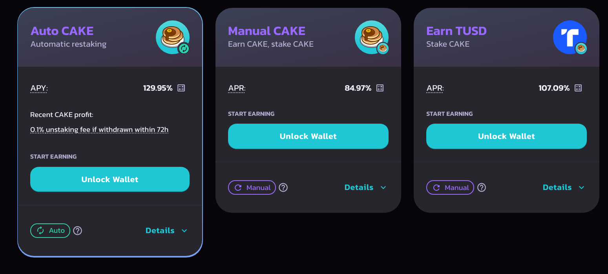

I've been pretty bored during some periods of the quarantine, which led me to look into some cryptocurrencies. While the use case for many of them might not be apparent, I think their influence is only gonna get bigger as time goes on. I wanted to write down some of the things I've been thinking about.
Everyone knows about the huge energy consumption problems with bitcoin (Telsa recently sold all of their bitcoin holdings because of this), the slow transactions and high fees. But another big problem that also seems to come up is how easy it is to track bitcoin transactions. By design the blockchain is public, which means once someone can tie your address to you, they can see all of your transactions. To remedy this, bitcoin.org's section on privacy recommends creating a new address whenever receiving payments. While this could work, it's difficult to deal with if you are juggling multiple addresses, and later sending the bitcoin to a central wallet would link the addresses to you anyway. Additionally, this doesn't solve the privacy issue for sending bitcoin. There are online bitcoin mixers/tumblers which claim to be able to route your coins through enough transactions to make them very difficult to detect, but all most of them offer is plausible deniability (which may be good enough for some cases, but it's not true privacy, also the tumblers take a cut of your coins).
The existence of tumblers points to another problem about the fungibility of bitcoin. While they don't anymore, dark web markets used to use bitcoin for buying/selling illegal goods or services and because transactions are public, bitcoin used in these transactions is marked by some as "tainted". Although technically there is nothing different about tainted coins, as could be said for a $100 bill that was used for an illicit transaction, these coins can trade at a discount to regular bitcoin. Companies like Chainalysis scan the blockchain to look for suspicious activity and link addresses to known criminals. It seems unfair that bitcoin you receive that happened to be used for illicit transactions sometime in the past can get you blacklisted from major exchanges.
There are many other coins that improve on bitcoin and are much more practical for transacting. The biggest privacy focused coin which solves many of the problems of bitcoin is Monero (XMR). It uses stealth addresses, ring signatures and a couple other things that I don't understand to prevent people from figuring how who is transacting and for how much XMR. It also uses a dynamic block size which decreases the transaction time drastically compared to bitcoin. Another "privacy" coin that's talked about is Z-Cash (ZEC), however it's public by default and the private feature has to be enabled per transaction.
I've also been looking into Ripple (XRP), which doesn't have the same privacy advantages but settles very quickly and has a low transaction fee. It achieves this by relying on a consensus protocol. Ripple (the company) seeks to integrate their technology with large banks and other established financial institutions. However, they are currently being sued by the SEC for selling unregistered securities. From what I've read the contention seems to be whether XRP is a "security" or a "commodity". The result of this lawsuit will set a precedent for the future and if it goes Ripple's way, XRP could see a huge price increase.
Once I explored the options on centralized exchanges like binance and coinbase I spent some time checking out DeFi. Instead of holding your coins on a centralized exchange, you hold them in a private wallet and conduct trades on swaps like pancakeswap and uniswap. These swaps are built on existing blockchain networks like ethereum and the binance smart chain and the allow you to swap tokens and receive rewards for adding liquidity. I went with the BSC because the gas fees on ethereum are very high right now and I was already using binance anyway. It was pretty easy to make a wallet and start trading. I was initially surprised by the staking offered by pancakeswap, for the native coin (CAKE) it's currently upwards of 120% which is insane.
Because anyone can make a coin and put it on the BSC, there are tons of micro-cap coins based almost entirely on hype. One of these that I've been looking at is called Ultrasafe (ULTRA) and was recently released. At the time of writing it's very cheap (1 ULTRA = 0.00000003 USD), which means it doesn't take much of a buy in to become a multi-billionaire. Ultrasafe and many coins like it use the smart-contract feature of the BSC and ethereum to add "tokenomics" to their coins. For Ultra, there is an 8% tax on every transaction, where 4% goes to liquidity and the other 4% is returned to other Ultra holders. This means you gain more ultra simply by holding it. However, I don't really understand what the eventual use case of these types of coins could be if they can't be used for regular transactions (why would anyone spend a coin with an 8% tax on every transaction?).
It's reasonable to be suspicious of a coin with a sub-cent value (similarly to a penny stock), but Ultrasafe looks really legitimate when compared to other BSC coins with names like pregnantbutt and LoserCoin (not to say that you should buy any of them). Additionally, because there is no regulation, scams are commonplace and many coins are "rugpulled" by the developers. This technology is definitely a while away from any adoption by established financial institutions, and regulation would kind of defeat the point IMO.
Recently new tokens have been created which are unique and non-fungible. These can be traded on the ethereum blockchain and other marketplaces. Many people use them for digital art and other collectibles, and some have even connected them to real world objects (ex. creating an NFT of a famous painting). However, right now I think the only application of this would be to show proof of ownership, because the physical object is still totally separate.
I think the real developments will come when coins can decouple themselves from bitcoin because right now they all seem to follow either bitcoin or ethereum (there is a comparison to be made to moving off the gold standard). I've enjoyed exploring crypto and I think I've learned alot. That being said, I'm still pretty green and I'll probably change my mind about some things with more research. It's also possible that I got some things wrong about how these mechanisms work. If I find anything, I'll be sure to update this page.